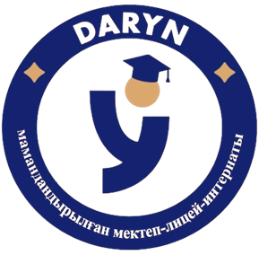
«Детство за колючей проволокой: цифровая карта судеб детей Карлага»
ВыполнилаБартчик Варвара
Научный руководительм.г.н., Тобылов А.С.
Исторический контекст репрессий
В 30-50-х гг. ХХ века политические репрессии затронули тысячи семей. После ареста родителей дети оставались без попечения, передавались родственникам или направлялись в детские учреждения. Особое место в этих процессах занимал Карлаг.
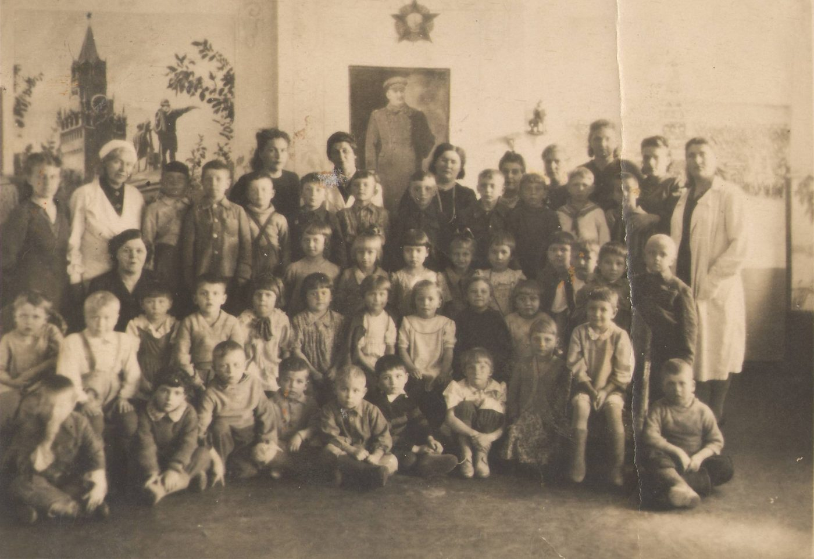
Актуальность исследования
Судьбы детей, пострадавших от политических репрессий, остаются одной из малоизученных страниц истории Карагандинского региона. Цифровая карта позволяет восстановить и наглядно показать маршруты их судеб на основе исторических источников.
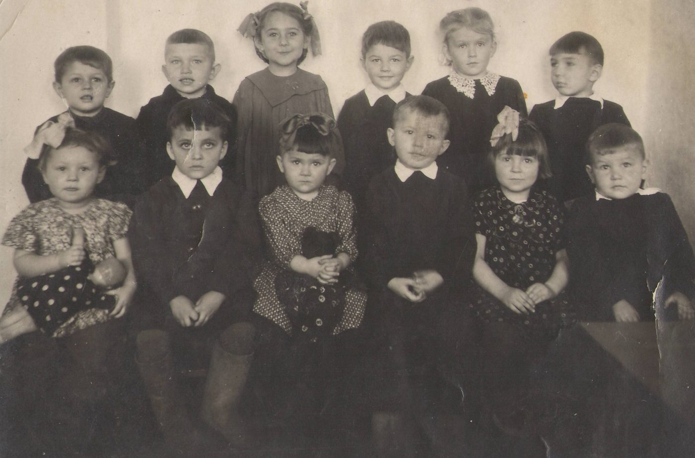
Цель и задачи исследования
Восстановить и визуализировать маршруты судеб детей, пострадавших от политических репрессий, на территории Карагандинского региона.
- Изучить исторические источники о судьбах детей репрессированных.
- Определить основные маршруты их перемещения.
- Выявить детские учреждения, связанные с их судьбами.
- Создать цифровую карту, объединяющую выявленные факты, фотографии и источники.
- Показать влияние репрессий на судьбы детей и сохранить память о них.
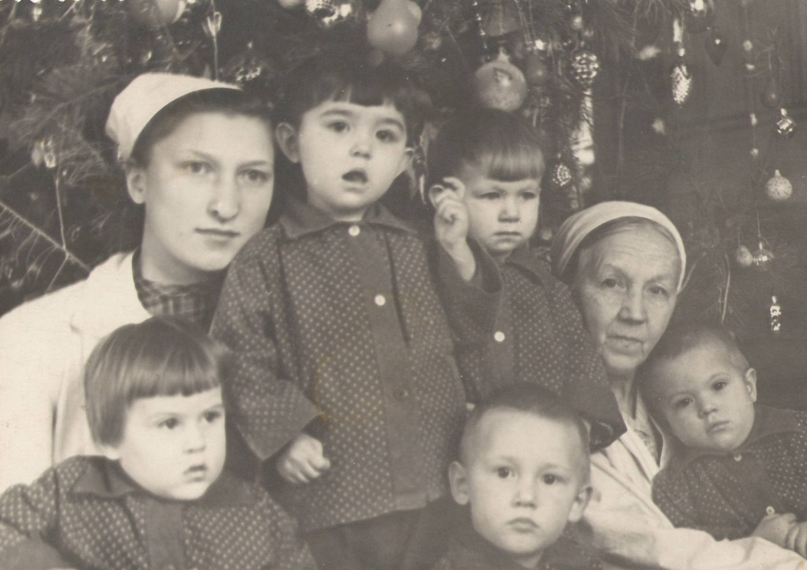
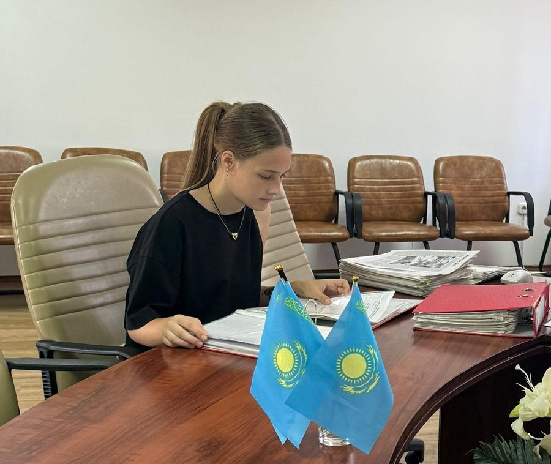
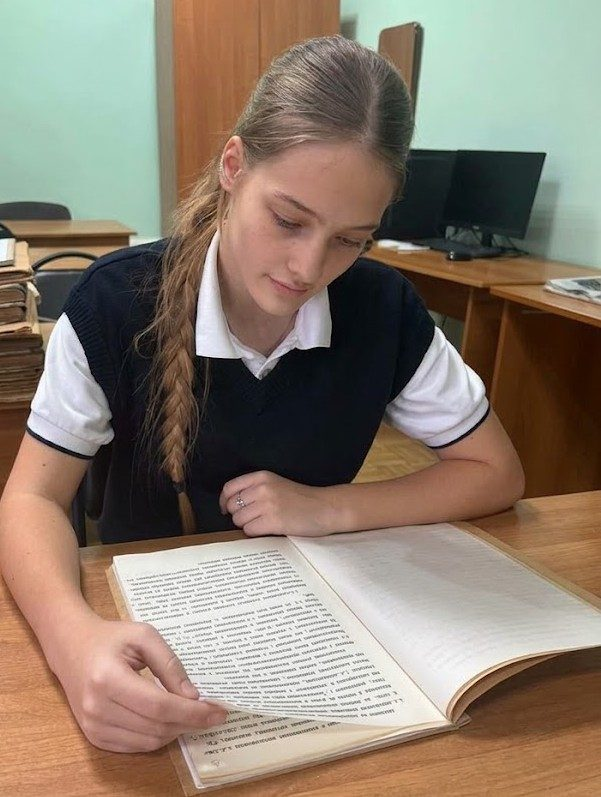
Методы исследования
- 1Источниковедческий анализ
- 2Биографический метод
- 3Историко-сравнительный метод
- 4Метод интервью
- 5Картографический метод
- 6Цифровая визуализация
Как политические репрессии повлияли на судьбы детей и какие маршруты их перемещения можно восстановить на территории Карагандинского региона?
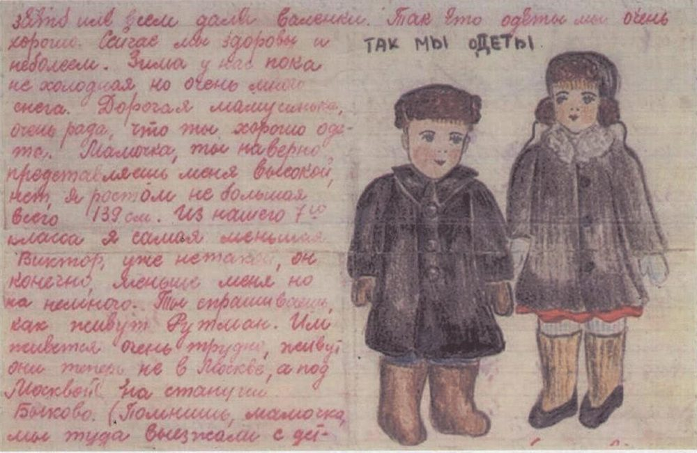
Источник: Музейно-мемориальный комплекс жертв политических репрессий и тоталитаризма «АЛЖИР», ПМОФ-3018
Маршруты судеб на карте региона
Четыре отмеченных места — №1, №2, №3 и №4. Красные стрелки показывают, как перемещались дети. Нажмите на флажок, чтобы увидеть фото, документ и рассказ.
☝Карту можно двигать пальцем или мышью, приближать щипком или колесом. Закрыть — кнопкой сверху или клавишей Esc.
Практическая значимость
Созданная интерактивная цифровая карта позволяет наглядно изучать судьбы детей репрессированных и может использоваться на уроках истории Казахстана, классных часах, музейных и краеведческих мероприятиях.
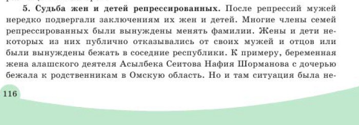
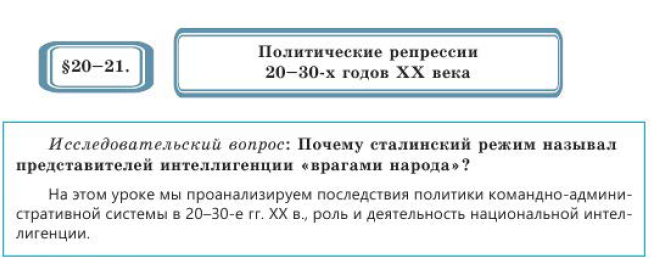
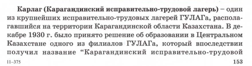
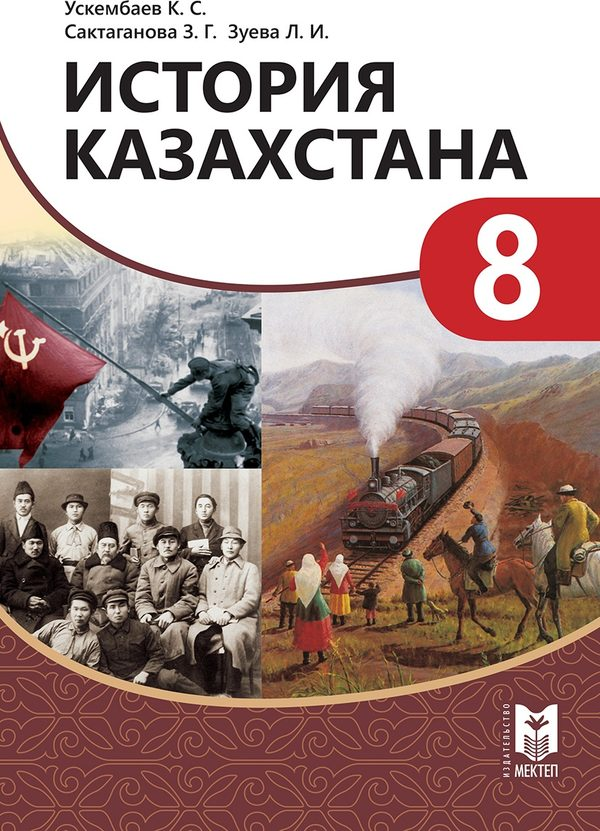
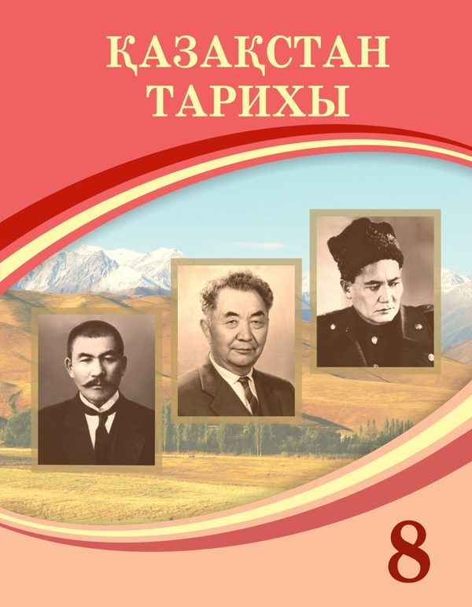
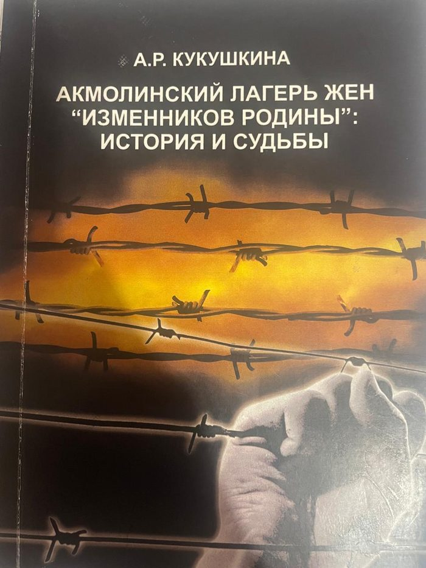
Список использованных источников
- Шаймуханов Д.А., Шаймуханова С.Д. Карлаг.
- Дильманов С.Д. Исправительно-трудовые лагеря НКВД-МВД СССР на территории Казахстана (30-е – 50-е годы XX века).
- Кукушкина А.Р. Акмолинский лагерь жен «изменников Родины»: история и судьбы.
- Калыбекова М.Ч. История депортированных народов Казахстана (1937–1956).
- Государственный архив Карагандинской области
- Материалы музеев Карлага и АЛЖИРа
Заключение
Политические репрессии изменили судьбы тысяч детей, лишив многих из них семьи и привычного детства. В ходе исследования мне удалось восстановить отдельные детские судьбы и маршруты, связанные с Карагандинским регионом. Созданная мной «Цифровая летопись моего края» показывает, что за каждой точкой на карте и каждым маршрутом стоит судьба ребёнка.
Выполнила: Бартчик Варвара · Научный руководитель: м.г.н., Тобылов А.С.
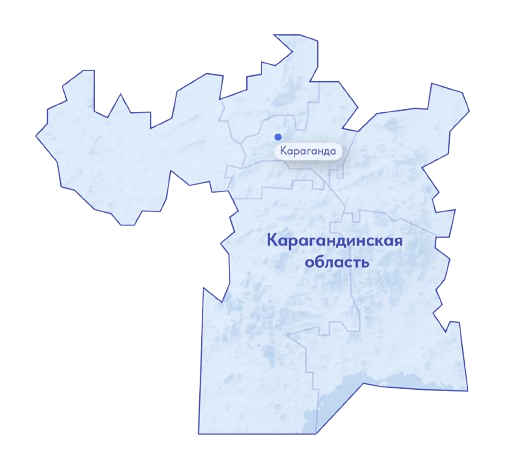